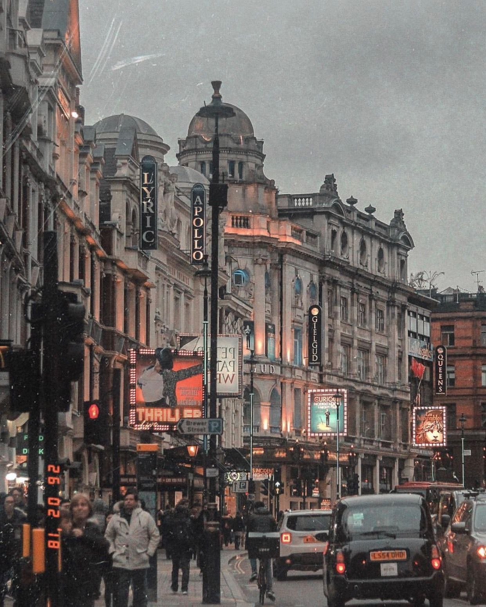
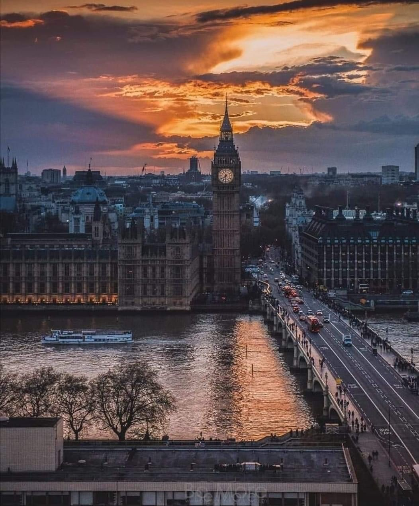

Londres




Vibrante, moderna, elegante,
movimentada, riquíssima em cultura e opções de entretenimento. Características como essas, entre tantas
outras, deixam claro por que Londres é um dos destinos mais procurados do mundo. A capital da Inglaterra
e do Reino Unido é, também, a sede da monarquia britânica, cidade que abriga o Big Ben e tantos outros
cartões-postais famosos, como a ponte da Torre de Londres, que fica às margens do rio Tâmisa; o palácio
de Buckingham; a Abadia de Westminster, além de vários museus interessantíssimos.
Prepare-se para dias muito intensos; é preciso ter bastante pique se a intenção é conhecer bem a capital
inglesa. Por esse motivo, recomenda-se uma estadia de, no mínimo, quatro dias. Boa parte das principais
atrações de Londres se concentram nas zonas 1 e 2 (levando em consideração o mapa do transporte público)
e é possível, além de bastante agradável, ir a pé de um ponto turístico a outro. Mas o mais provável é
que o visitante faça bastante uso do eficiente transporte público local (o metrô, por exemplo, é
considerado um dos melhores do mundo).
Big Ben
Big Ben – um dos principais pontos turísticos de Londres
Não dá para ir a Londres e não ver o relógio mais famoso do mundo, certo? Quase, o Big Ben na verdade é
o sino localizado dentro da famosa Torre do Relógio, também conhecida como Elizabeth Tower, símbolo da
cidade.
O Palácio de Westminster, um dos principais pontos turísticos de Londres, é onde se encontra a Torre do
Relógio. Além de ser a sede do parlamento inglês, é uma referência da cidade em arquitetura neogótica, é
beleza sem fim.
A visita à Torre do Relógio infelizmente é fechada para os turistas, sendo restrita aos cidadãos
residentes do Reino Unido. Mas calma! Ainda é possível visitar o Palácio e conhecer um pouco mais da
rotina parlamentar britânica.
London Eye
A London Eye é a escolha perfeita se você é daqueles que ama um ponto turístico
com pôr do sol (e o de Londres é um espetáculo) ou apenas gosta de aproveitar a vista de uma cidade lá
do alto. A estrutura é super perto do Palácio de Westminster, 10 minutos de caminhada, o que é ótimo
pois você pode fazer um passeio seguido do outro.
São 135 metros de altura que te permitem uma vista completa de Londres, em grandes cabines que comportam
mais de 20 pessoas.
O passeio dura em média 30 minutos, custa em torno de 24 libras e vale muito a pena, mesmo em épocas de
fila (verão). Por isso, vale a pena comprar ingressos antecipados para não perder tempo esperando.
Durante a maior parte do ano o ponto turístico funciona das 11h às 18h horas. Já nos três meses de verão
o horário de funcionamento é das 10h às 20h30.
Tower Bridge
Um dos pontos turísticos mais famosos de Londres, a Tower Bridge é uma das
pontes que une os dois lados do Rio Tâmisa.
É a mais conhecida por sua característica levadiça. A opção por essa construção se deu em razão do
grande movimento de cargas no rio. A construção é aberta à visitação e tem horários diferentes
dependendo da estação.